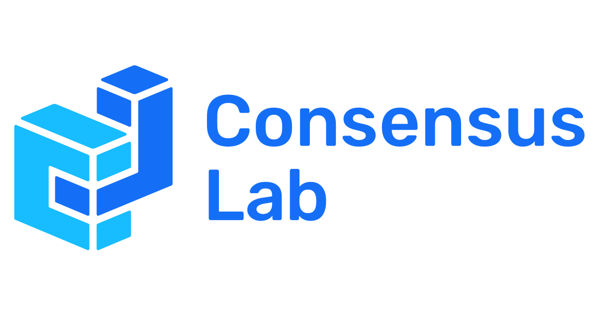

| Home | Calls | Registration | Programme |
Consensus is at the heart of decentralised systems, having taken centre stage with the introduction of Nakamoto’s Proof-of-Work (PoW) algorithm and the subsequent explosion of blockchain technology. However, it also poses a significant scalability bottleneck for blockchain networks.
In order for decentralised cloud computing and the decentralised internet to become pervasive and supersede current technologies and architectures, they will need to support comparable workloads, with billions of transactions per second, low latency, and high security, in addition to stronger privacy guarantees, censorship resistance, and availability. The abundance of challenges, both theoretical and applied, has turned blockchain and consensus research into extremely active research areas.
ConsensusDays 23 aims to provide a forum for the discussion of early-stage but high-impact research with scientific interest and real-world applications. It is the third edition of an event started in 2021, which has consistently attracted high-quality contributions from across academia and industry. It welcomes not just traditionally scoped consensus research but also work in adjacent topics within the broader distributed systems field.
This year, we'll go back to our roots and organise ConsensusDay as a pure virtual event. We will also drop the proceedings and again welcome both novel submissions and those published elsewhere in the preceeding 12 months.
For comments and questions please email us at consensusday@protocol.ai.
|
|
 |
| Design by Mike Pierce | Content licensed CC-BY 4.0 |